Brand identity and website development
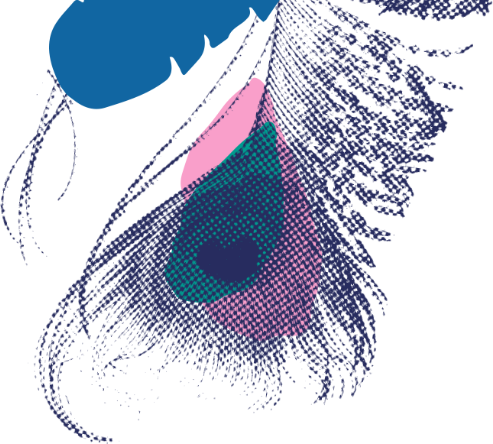 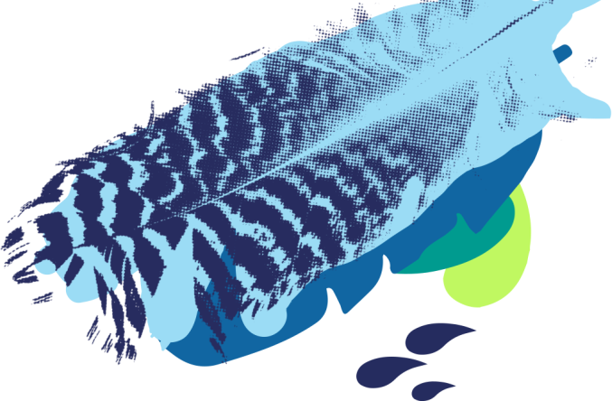 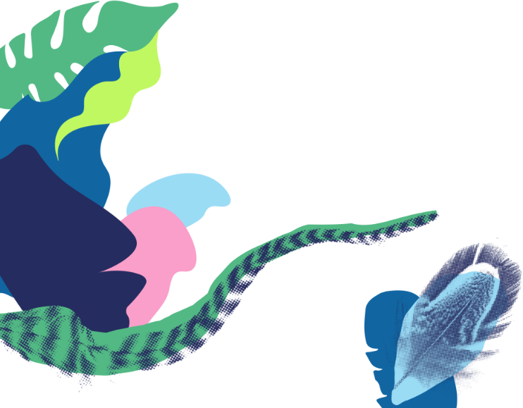 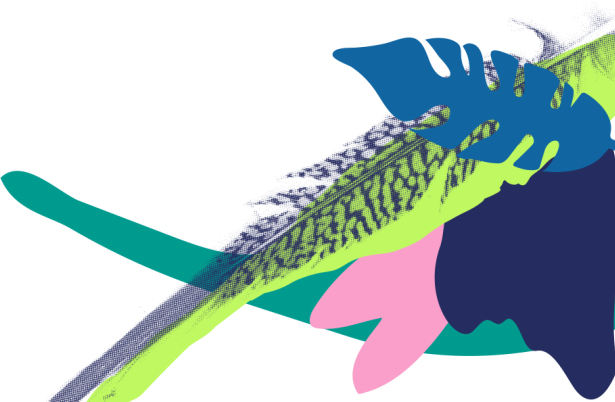Hatha-ka-bana
Hatha-ka-bana is a side project of mine. The accessories are hand-crafted and the feathers have been sourced from cruelty free suppliers or collected by myself over the years, sanitised and sometimes dyed. I began making and selling the accessories at markets around Melbourne or giving them as gifts to friends, but when demand for them grew I decided to create a brand and a website to sell them.
Sector
E-Commerce
Services
- Brand Strategy & Naming
- Identity Design
- Website Design and Development
- Social Marketing
Website

Creating a unique and personal brand
I wanted to create a brand that not only was a reflection of the products being sold, but also captured a few unique aspects of myself as an individual, I considered my lifelong passion for art and handmade things, my distant heritage of Indian royalty and my favourite item of clothing for years, being a pair of pink leggings covered in tropical fruits.
The name Hathakabana is derived from the Hindi phrase, 'हाथ का बना' pronounced 'haath ka bana', which translates to ‘handmade’ in English. The colour palette reminds me a lot of my favourite tropical leggings as well as the items I was selling.
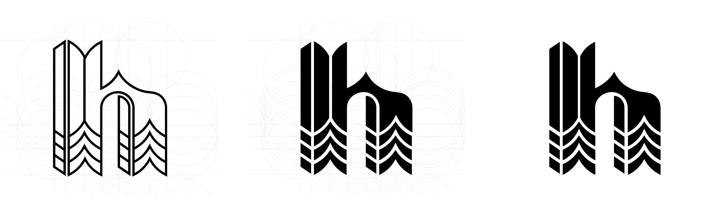
Developing the visual identity
The design of the bespoke lettering and brandmark was inspired by the chevron patterns that make up the structure of each feather. I wanted to create a wordmark that was quite simple and minimal to balance nicely with a bold colour palette and variety of patterns. The secondary brandmark is used as a standalone mark in digital applications, it is used as a social profile image and in the top left corner of the website to take the user back to the homepage.
I have often admired feathers, since I was young. The bright colours and patterns of spots, stripes and zig-zags influenced me to paint, scan and digitally manipulate the feathers. The result of this was the illustrations used throughout the branding.
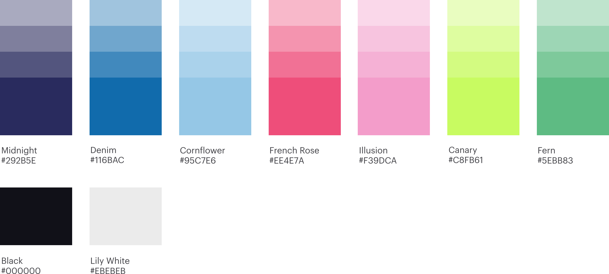
Building out the pattern library
I explored a few colour combinations and settled on the palette shown above. The palette is quite tropical and vibrant which pairs nicely with the white space, minimal iconography and sans serif typeface used throughout the branding.
Because the accessories are such statement pieces in themselves I wanted to keep the design elements used to house the photography as clean and minimal as possible. Exceptions would be made for header banners or social posts where the illustrations would be used as an alternative to photography.
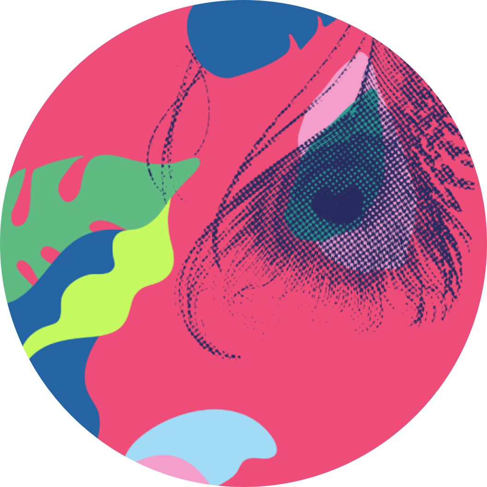
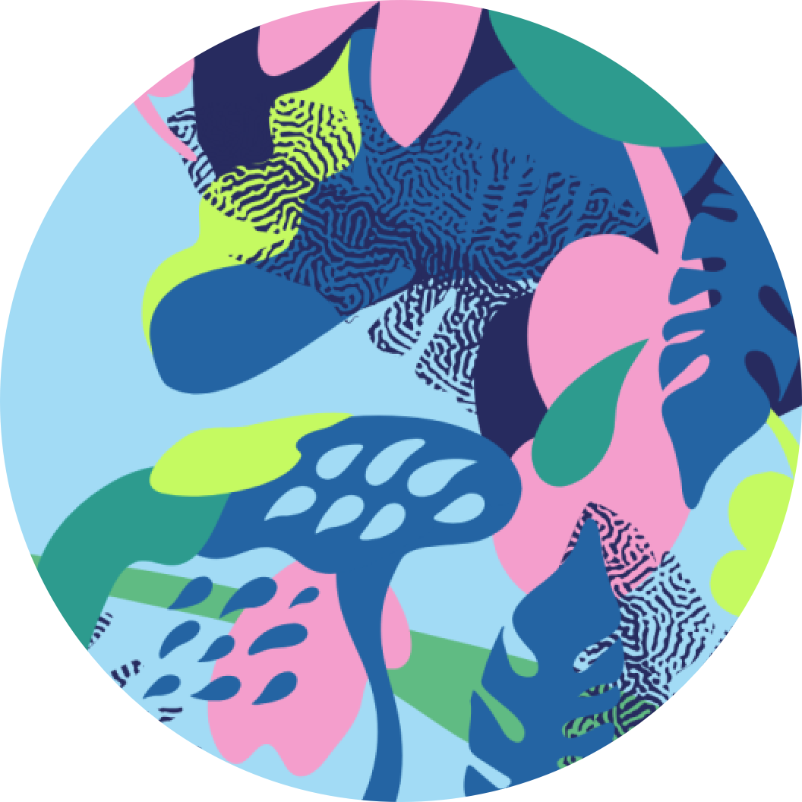
The palette and illustrations were inspired by the colourful feathers used to make the accessories and the design.
Website homepage. Animation in header banner upon load and revealing featured products as the user scrolls.
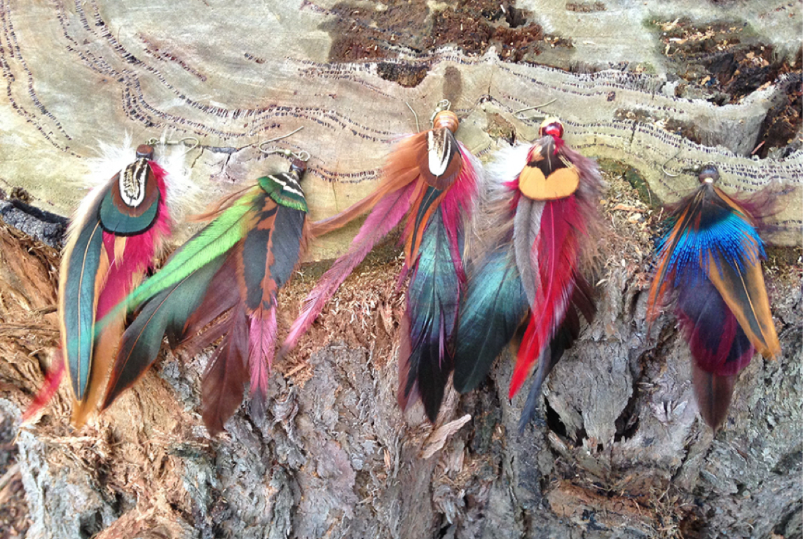
Designing the website and social media banners
The responsive layout of the website ensures a comfortable user experience. The site uses a clean, generously sized layout with a bold colour palette, simple animations and playful navigational elements and icons. The header of the homepage features a transition of feathers and patterns on load, as you scroll down there are some featured products and a link to see all the products.
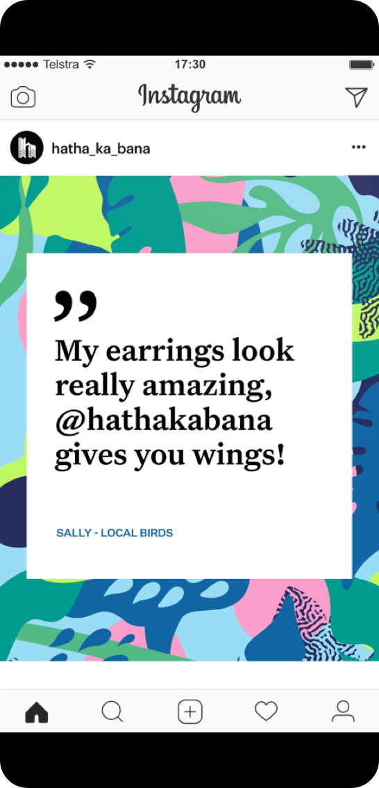
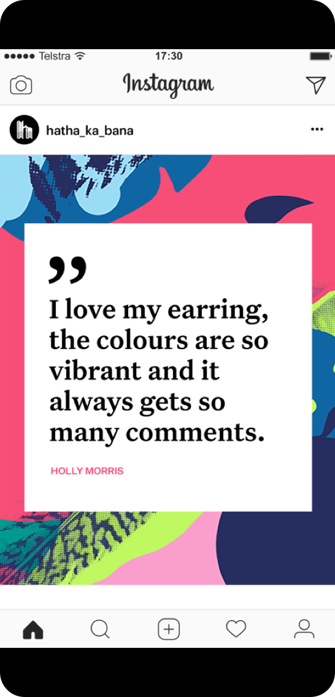
The social banners feature reviews left on the Facebook page by customers.